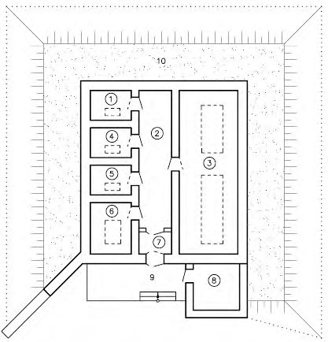

СП 507.1325800.2021 «Здания и помещения для хранения оружия, боеприпасов и специ»
О документе: разработчики, утверждение, регистрация, ключевые слова
СВОД ПРАВИЛ СП .1325800.2021
Издание официальное
1 ИСПОЛНИТЕЛЬ -Акционерное общество «Центральный научноисследовательский и проектно-экспериментальный институт промышленных зданий и сооружений»
2 ВНЕСЕН Техническим комитетом по стандартизации ТК 465 «Строительство»
3 ПОДГОТОВЛЕН к утверждению Департаментом градостроительной деятельности и архитектуры Министерства строительства и жилищнокоммунального хозяйства Российской Федерации (Минстрой России)
4 УТВЕРЖДЕН приказом Министерства строительства и жилищнокоммунального хозяйства Российской Федерации от 27 декабря 2021 г. № 1010/пр и введен в действие с 28 января 2022 г.
5 ЗАРЕГИСТРИРОВАН Федеральным агентством по техническому регулированию и метрологии (Росстандарт)
6 ВВЕДЕН ВПЕРВЫЕ
В случае пересмотра (замены) или отмены настоящего свода правил соответствующее уведомление будет опубликовано в установленном порядке. Соответствующая информация, уведомление и тексты размещаются также в информационной системе общего пользования - на официальном сайте разработчика (Минстрой России) в сети Интернет
© Минстрой России, 2021
Настоящий нормативный документ не может быть полностью или частично воспроизведен, тиражирован и распространен в качестве официального издания на территории Российской Федерации без разрешения Минстроя России
и
Дата введения - 2022-01-28
УДК ОКС 91.040.20
Ключевые слова: вооружение, боеприпасы, здание склада, хранилище, периметр охраны, взрывозащитное исполнение, обсыпное здание, функциональные группы помещений, складской комплекс, конструктивные решения
ИСПОЛНИТЕЛЬ АО «ЦНИИПромзданий»
Генеральный директор Н.Г. Келасьев
Руководитель разработки
заместитель генерального директора Д.К. Лейкина
Введение
Настоящий свод правил разработан в целях обеспечения соблюдения требований Федерального закона от 30 декабря 2009 г. № 384-ФЗ «Технический регламент о безопасности зданий и сооружений» с учетом требований федеральных законов от 23 декабря 2004 г. № 190-ФЗ «Градостроительный кодекс Российской Федерации», от 22 июля 2008 г. № 123-ФЗ «Технический регламент о требованиях пожарной безопасности», от 13 декабря 1996 г. № 150-ФЗ «Об оружии».
Свод правил разработан авторским коллективом: АО «ЦНИИПромзданий» (канд. архитектуры Д.К. Лейкина, А.Ю. Солодова) при участии М.В. Смирнова , Отдела вооружения и специальных средств УИТИОСВ ФСИН России (А.П. Хотенко ).
1Область применения
При реконструкции и капитальном ремонте существующих складских комплексов и отдельно стоящих складов, предназначенных для хранения вооружения и боеприпасов, требования свода правил следует учитывать в объеме, возможном для их реализации в сложившихся условиях застройки.
2Нормативные ссылки
В настоящем своде правил использованы нормативные ссылки на следующие документы:
Издание официальное
ДЛЯ НУЖД УГОЛОВНО-ИСПОЛНИТЕЛЬНОЙ СИСТЕМЫ
Правила проектирования
Buildings and storage facilities for weapons, ammunition and special equipment for the penitentiary system. Design rules
СП .1325800.2021
ГОСТ 379-2015 Кирпич, камни, блоки и плиты перегородочные силикатные. Общие технические условия
ГОСТ 530-2012 Кирпич и камень керамические. Общие технические условия ГОСТ 11214-2003 Блоки оконные деревянные с листовым остеклением.
Технические условия
ГОСТ 13579-2018 Блоки бетонные для стен подвалов. Технические условия
ГОСТ 25820-2014 Бетоны легкие. Технические условия
ГОСТ 30674-99 Блоки оконные из поливинилхлоридных профилей. Технические условия
ГОСТ 30826-2014 Стекло многослойное. Технические условия
ГОСТ 34593-2019 Двери защитные. Общие технические требования и методы испытаний на устойчивость к взлому, взрыву и пулестойкость
ГОСТ Р 56712-2015 Панели многослойные из поликарбоната. Технические условия
ГОСТ Р 57278-2016 Ограждения защитные. Классификация. Общие положения
ГОСТ Р 57362-2016 Устройства противотаранные управляемые. Классификация. Термины и определения
СП 1.13130.2020 Системы противопожарной защиты. Эвакуационные пути и выходы
СП 2.13130.2020 Системы противопожарной защиты. Обеспечение огнестойкости объектов защиты
СП 3.13130.2009 Системы противопожарной защиты. Система оповещения и управления эвакуацией людей при пожаре. Требования пожарной безопасности
СП 4.13130.2013 Системы противопожарной защиты. Ограничение распространения пожара на объектах защиты. Требования к объемнопланировочным и конструктивным решениям (с изменением № 1)
СП 6.13130.2021 Системы противопожарной защиты. Электроустановки низковольтные. Требования пожарной безопасности
СП 7.13130.2013 Отопление, вентиляция и кондиционирование. Требования пожарной безопасности (с изменениями № 1, № 2)
СП 8.13130.2020 Системы противопожарной защиты. Наружное противопожарное водоснабжение. Требования пожарной безопасности
СП 9.13130.2009 Техника пожарная. Огнетушители. Требования к эксплуатации
СП 10.13130.2020 Системы противопожарной защиты. Внутренний противопожарный водопровод. Нормы и правила проектирования
СП 12.13130.2009 Определение категорий помещений, зданий и наружных установок по взрывопожарной и пожарной опасности (с изменением № 1)
СП 18.13330.2019 Производственные объекты. Планировочная организация земельного участка (СНиП II-89-80* Генеральные планы промышленных предприятий) (с изменением № 1)
СП 20.13330.2016 «СНиП 2.01.07-85* Нагрузки и воздействия» (с изменениями № 1, № 2, № 3)
СП 29.13330.2011 «СНиП 2.03.13-88 Полы» (с изменением № 1)
СП 30.13330.2020 «СНиП 2.04.01-85* Внутренний водопровод и канализация зданий»
СП 31.13330.2012 «СНиП 2.04.02-84 Водоснабжение. Наружные сети и сооружения» (с изменениями № 1, № 2, № 3, № 4, № 5)
СП 32.13330.2018 «СНиП 2.04.03-85 Канализация. Наружные сети и сооружения» (с изменением № 1)
СП 42.13330.2016 «СНиП 2.07.01-89* Градостроительство. Планировка и застройка городских и сельских поселений» (с изменениями № 1, № 2)
СП 44.13330.2011 «СНиП 2.09.04-87* Административные и бытовые здания» (с изменениями № 1, № 2, № 3)
СП 45.13330.2017 «СНиП 3.02.01-87 Земляные сооружения, основания и фундаменты» (с изменениями № 1, № 2)
СП 47.13330.2016 «СНиП 11-02-96 Инженерные изыскания для строительства. Основные положения» (с изменением № 1)
СП 50.13330.2012 «СНиП 23-02-2003 Тепловая защита зданий» (с изменением № 1)
СП 51.13330.2011 «СНиП 23-03-2003 Защита от шума» (с изменением № 1)
СП 52.13330.2016 «СНиП 23-05-95* Естественное и искусственное освещение» (с изменением № 1)
СП 56.13330.2011 «СНиП 31-03-2001 Производственные здания» (с изменениями № 1, № 2, № 3)
СП 60.13330.2020 «СНиП 41-01-2003 Отопление, вентиляция и кондиционирование воздуха»
СП 89.13330.2016 «СНиП II-35-76 Котельные установки»
СП 113.13330.2016 «СНиП 21-02-99* Стоянки автомобилей» (с изменением № 1)
СП 124.13330.2012 «СНиП 41-02-2003 Тепловые сети» (с изменением № 1)
СП 129.13330.2019 «СНиП 3.05.04-85* Наружные сети и сооружения водоснабжения и канализации»
СП 247.1325800.2016 Следственные изоляторы уголовно-исполнительной системы. Правила проектирования (с изменением № 1)
СП 296.1325800.2017 Здания и сооружения. Особые воздействия (с изменением № 1)
СП 308.1325800.2017 Исправительные учреждения и центры уголовноисполнительной системы. Правила проектирования (в двух частях)
СП 380.1325800.2018 Здания пожарных депо. Правила проектирования (с изменением № 1)
СП 439.1325800.2018 Здания и сооружения. Правила проектирования аварийного освещения
СП 484.1311500.2020 Системы противопожарной защиты. Системы пожарной сигнализации и автоматизации систем противопожарной защиты. Нормы и правила проектирования
СП 485.1311500.2020 Системы противопожарной защиты. Установки пожаротушения автоматические. Нормы и правила проектирования
СП 486.1311500.2020 Системы противопожарной защиты. Перечень зданий, сооружений, помещений и оборудования, подлежащих защите автоматическими установками пожаротушения и системами пожарной сигнализации. Требования пожарной безопасности
СанПиН 1.2.3685-21 Гигиенические нормативы и требования к обеспечению безопасности и (или) безвредности для человека факторов среды обитания
СанПиН 2.1.3684-21 Санитарно-эпидемиологические требования к содержанию территорий городских и сельских поселений, к водным объектам, питьевой воде и питьевому водоснабжению, атмосферному воздуху, почвам, жилым помещениям, эксплуатации производственных, общественных помещений, организации и проведению санитарно-противоэпидемических (профилактических) мероприятий
СанПиН 2.6.1.2523-09 Нормы радиационной безопасности НРБ-99/2009
Примечание - При пользовании настоящим сводом правил целесообразно проверить действие ссылочных документов в информационной системе общего пользования -на официальном сайте федерального органа исполнительной власти в сфере стандартизации в сети Интернет или по ежегодному информационному указателю «Национальные стандарты», который опубликован по состоянию на 1 января текущего года, и по выпускам ежемесячного информационного указателя «Национальные стандарты» за текущий год. Если заменен ссылочный документ, на который дана недатированная ссылка, то рекомендуется использовать действующую версию этого документа с учетом всех внесенных в данную версию изменений. Если заменен ссылочный документ, на который дана датированная ссылка, то рекомендуется использовать версию этого документа с указанным выше годом утверждения (принятия). Если после утверждения настоящего свода правил в ссылочный документ, на который дана датированная ссылка, внесено изменение, затрагивающее положение, на которое дана ссылка, то это положение рекомендуется применять без учета данного изменения. Если ссылочный документ отменен без замены, то положение, в котором дана ссылка на него, рекомендуется применять в части, не затрагивающей эту ссылку. Сведения о действии сводов правил целесообразно проверить в Федеральном информационном фонде стандартов.
3Термины, определения и сокращения
В настоящем своде правил применены следующие термины с соответствующими определениями:
- 3.1.1 обвалованное здание
- Здание, по периметру которого на определенном расстоянии от наружных стен сооружен защитный насыпной вал (система защитных валов).
- 3.1.2 обсыпное здание
- Здание с отметкой пола помещений выше планировочной отметки земли, наружные стены и покрытие которого укрыты слоем насыпного грунта до отметки, превышающей отметку верха покрытия здания, не менее чем на 0,5 м.
- 3.1.3 подземное здание
- Здание, помещения которого расположены ниже планировочной отметки земли на всю высоту.
- 3.1.4 полузаглубленное обсыпное здание
- Здание с отметкой пола помещений ниже планировочной отметки земли на высоту не более половины высоты помещений, наружные стены и покрытие которого укрыты слоем насыпного грунта до отметки, превышающей отметку верха покрытия здания, не менее, чем на 0,5 м.
- 3.1.5 тротиловый эквивалент
- Энергетический потенциал быстро протекающего процесса физических и химических превращений взрывчатых веществ (взрыва), выраженный в количестве тротила, выделяющем при взрыве равное количество энергии.
- 3.1.6 укупорочная тара (укупорка)
- Вид упаковки вооружения и боеприпасов; предусматривается в виде бумажных или полимерных мешков, картонных коробок, деревянной тары (ящиков, решетчатых контейнеров), стеклянных сосудов, металлической тары (канистры, бочки, банки, специальные контейнеры, пеналы).
- 3.1.7 хранилище
- Отдельное изолированное помещение (секция) здания складского назначения, предназначенное для размещения на хранение конкретного вида (группы видов) вооружения или боеприпасов.
- 3.1.8 этажерка (здесь)
- Одноярусное каркасное сооружение (без стен), свободно стоящее в помещении (хранилище) и предназначенное для размещения складируемого вооружения. В настоящем своде правил применены следующие сокращения:
4Общие требования к проектированию
В целях организации хранения вооружения и боеприпасов для нужд УИС РФ предусматривают складские комплексы с суммарной загрузкой хранилищ боеприпасов по массе взрывчатых веществ не более 1,7 т в тротиловом эквиваленте (в т. ч. в составе боеприпасов стрелкового оружия - не более 1,5 т; в составе гранатометных выстрелов, ручных гранат, взрывчатых веществ, средств взрывания, пиротехнических и дымовых средств, взрывпакетов - суммарно не более 0,2 т).
Хранение вооружения и боеприпасов (за исключением бронированных боевых машин и специальной техники) осуществляют в помещениях (хранилищах) складских зданий комплекса.
Хранение вооружения и боеприпасов на открытых площадках и площадках, оборудованных навесами, не допускается.
Виды боеприпасов, размещаемые в отдельных хранилищах:
- боеприпасы стрелкового оружия (Е7);
- пиротехнические средства (Е6), в т. ч. осветительные и сигнальные патроны, ручные светозвуковые гранаты, светошумовые устройства и гранаты, звуковые пиротехнические гранаты, газовые гранаты, патроны с газовыми гранатами; дымовые средства (Е7), в т. ч. дымовые шашки, дымовые гранаты, ранцевые аппараты с активным составом раздражающего действия; взрывпакеты (Е5), иные боеприпасы, снаряженные пиротехническими составами и предназначенные для получения светового, дымового, звукового, теплового, динамического, раздражающего или другого специального эффекта, состоящие на вооружении УИС РФ;
- гранатометные выстрелы (Е2), ручные гранаты (Е6);
- взрывчатые вещества (Е6), в т. ч. малогабаритные взрывные устройства, сосредоточенные заряды;
- средства взрывания (Е7);
- опасные для хранения боеприпасы (Е2), в т. ч. непригодные, некомплектные, запрещенные к применению боеприпасов.
Примечание - В скобках указаны категории опасности отдельных видов боеприпасов, приведенные в [10].
Допускается в хранилище боеприпасов стрелкового оружия предусматривать хранение в металлических сейфах (шкафах) пиротехнических, дымовых средств и иных боеприпасов, снаряженных пиротехническими составами и предназначенных для получения светового, дымового, звукового, теплового, динамического, раздражающего или другого специального эффекта, в количестве не более 500 шт.; при этом хранилище пиротехнических и дымовых средств в составе здания склада боеприпасов допускается не предусматривать.
СП .1325800.2021
исходя из необходимости обеспечения определенных температурных условий хранения вооружения.
Виды вооружения, размещаемые в отдельных хранилищах, принимают по таблице 4.1.
Таблица 4.1
| Виды вооружения | Расчетная температура воздуха в хранилищах, °С | Категория пожарной опасности хранилища по СП 12.13130 |
|---|---|---|
| 1 Хранилище вооружения №1: | 16 1) | В1-В4, Д 2) |
| 1.1 Стрелковое оружие и средства ближнего боя | 16 1) | В1-В4, Д 2) |
| 1.2 Специальное боевое вооружение | 16 1) | В1-В4, Д 2) |
| 1.3 Стрелковое учебное оружие | 16 1) | В1-В4, Д 2) |
| 1.4 Оружие для спортивных целей | 16 1) | В1-В4, Д 2) |
| 1.5 Приборы наблюдения и управления огнем, оптические приборы для спортивных целей | 16 1) | В1-В4, Д 2) |
| 1.6 Предметы и принадлежности к стрелковому оружию (револьверные шнуры, ружейные ремни и т. п.) | 16 1) | В1-В4, Д 2) |
| 2 Хранилище вооружения №2: | 5 | В1-В4 |
| 2.1 Средства индивидуальной защиты (кроме регенеративных и гопкалитовых патронов) | 5 | В1-В4 |
| 2.2 Средства химической разведки и контроля | 5 | В1-В4 |
| 2.3 Средства специальной противохимической обработки | 5 | В1-В4 |
| 2.4 Средства активной обороны (за исключением пиротехнических, дымовых средств и иных боеприпасов, снаряженных пиротехническими составами, предназначенными для получения светового, дымового, звукового, теплового, динамического, раздражающего или другого специального эффекта) | 5 | В1-В4 |
| 2.5 Средства коллективной защиты | 5 | В1-В4 |
| 3 Хранилище вооружения №3: | 5 | В1-В4 |
| 3.1 Регенеративные и гопкалитовые патроны средств | 5 | А |
Окончание таблицы 4.1
| Виды вооружения | Расчетная температура воздуха в хранилищах, °С | Категория пожарной опасности хранилища по СП 12.13130 |
|---|---|---|
| 4 Хранилище вооружения №4: | 16 | В1-В4 |
| 4.1 Средства радиационной разведки и дозиметрического контроля | 16 | В1-В4 |
| 4.2 Ремонтные принадлежности средств защиты (ремонтные ящики, ремонтные противогазные сумки) | 16 | В1-В4 |
| 4.3 Средства инженерного вооружения | 16 | В1-В4 |
| 4.4 Табельное вспомогательное имущество | 16 | В1-В4 |
| 4.5 Источники питания к приборам и комплектам | 16 | В1-В4 |
| 4.6 Средства индивидуальной бронезащиты | 16 | В1-В4 |
Примечание - Допускается предусматривать отличный от представленного в настоящей таблице состав видов вооружения, группируемых в отдельных хранилищах. Требования к совместимости видов вооружения и условиям хранения приведены в [6].
Размещение в хранилищах боеприпасов горючих газов, легковоспламеняющихся или горючих жидкостей, порохов в открытом виде или в упаковке, а также разборка, перезарядка, сборка, извлечение зарядов, ремонт боеприпасов не предусматриваются.
Размещение в хранилищах вооружения горючих газов, легковоспламеняющихся или горючих жидкостей не предусматривается.
15 % - для объектов реконструкции и капитального ремонта;
10 % - для объектов нового строительства.
Число рабочих мест в помещениях административного назначения и помещениях производственной мастерской по ремонту вооружения устанавливается заданием на проектирование.
5Требования к земельным участкам, размещению зданий и сооружений, благоустройству территории
При новом строительстве размещение складского комплекса не допускается на территориях:
- исправительных центров, жилых, режимных, изолированных жилых, производственных, лечебных и расположенных в периметре охраны хозяйственно-складских зон исправительных учреждений (в т. ч. лечебных исправительных и лечебно-профилактических учреждений), режимных, локальных и хозяйственно-складских зон тюрем и следственных изоляторов УИС РФ;
- потенциально подтопляемых в результате возможных природных и техногенных катастроф;
- с развитием опасных геологических и инженерно-геологических процессов, оползней, оседания или обрушения поверхности под влиянием горных разработок, селевых потоков и снежных лавин;
- имеющих радиоактивное загрязнение почв и грунтов выше установленной предельно допустимой нормы в соответствии с СанПиН 2.6.1.2523;
- в зонах санитарной охраны сооружений водоснабжения и канализационных сооружений (кроме входящих в состав складского комплекса) в соответствии с СанПиН 2.1.3684;
- охранных зон заповедников и других особо охраняемых природных территорий;
- непосредственно над карстовыми образованиями.
Примечание - Расстояние установлено для складского комплекса с максимальной суммарной загрузкой хранилищ в соответствии с 4.1. При меньшей суммарной загрузке хранилищ боеприпасов, устанавливаемой в задании на проектирование, и отсутствии на хранении реактивных гранатометных выстрелов допускается снижать расстояние от складского комплекса до различных объектов при соответствующем расчетном обосновании.
Указанное расстояние при организации хранения в складском комплексе только вооружения следует принимать с учетом требований СП 4.13130, СП 18.13330, СП 42.13330, [1], но не менее 15 м.
менее:
В составе складского комплекса предусматривают:
- здание склада боеприпасов (с хранилищами гранатометных выстрелов, ручных гранат, средств взрывания, взрывчатых веществ, пиротехнических средств, взрывпакетов, дымовых средств, опасных боеприпасов, иных боеприпасов, снаряженных пиротехническими составами и предназначенных для получения светового, дымового, звукового, теплового, динамического, раздражающего или другого специального эффекта);
- здание склада вооружения (с хранилищами различных видов вооружения, хранилищем боеприпасов стрелкового оружия) с блоком административных и бытовых помещений, блоком помещений производственной мастерской по ремонту вооружения;
- площадку технического осмотра боеприпасов, оборудованную навесом;
- открытые площадки или площадки, оборудованные навесами, для хранения бронированных боевых машин и специальной техники;
- площадку временного складирования порожней тары;
- периметр охраны (запретную зону) складского комплекса;
- КПП для пропуска людей и автотранспорта на территорию складского комплекса;
- здание отдельного поста подразделения ведомственной пожарной охраны ФСИН России (предусматривается при условии, установленном в 5.6);
- плоскостную открытого типа стоянку автомобилей для служебного автотранспорта и автомобилей сотрудников и посетителей складского комплекса;
- здания и сооружения [котельная, ТП (КТП), КНС, ВНС, дизельная электростанция, локальные очистные сооружения, водоемы или резервуары с запасом воды для нужд пожаротушения и т. п.] и инженерные сети складского комплекса;
- элементы благоустройства.
За пределами периметра охраны складского комплекса предусматривают площадку с твердым покрытием для установки контейнеров ТКО.
Здание отдельного поста подразделения ведомственной пожарной охраны ФСИН России следует предусматривать отдельно стоящим, расположенным вне периметра охраны складского комплекса на минимально возможном расстоянии от основного въезда на территорию складского комплекса (5.24), при этом территорию отдельного поста допускается предусматривать примыкающей к основному ограждению периметра охраны. Состав и площади помещений здания устанавливаются заданием на проектирование. Требования к проектированию здания следует принимать по СП 380.1325800.
Расстояние от здания отдельного поста подразделения ведомственной пожарной охраны ФСИН России до здания склада боеприпасов, расположенного на территории складского комплекса, должно составлять не менее 100 м.
Допускается предусматривать блок помещений КПП в составе блока административных и бытовых помещений, при этом расположение здания должно
СП .1325800.2021 обеспечивать возможность организации пропускного режима.
Число машино-мест устанавливают заданием на проектирование, при этом вместимость стоянки автомобилей должна составлять не менее 10 машино-мест, из которых одно машино-место (размерами не менее 3,5 × 10,0 м) предусматривается для стоянки грузовых автомобилей.
Параметры стоянки автомобилей следует принимать с учетом требований СП 113.13330.
Здание склада боеприпасов следует размещать таким образом, чтобы вход в него был обращен в противоположную сторону от здания склада вооружения с блоком административных и бытовых помещений и блоком помещений производственной мастерской по ремонту вооружения, а здание склада вооружения при этом находилось вне зоны опасной интенсивности взрывной волны при возможной аварии.
Допускается располагать площадку технического осмотра боеприпасов на расстоянии не менее 25 м от здания склада боеприпасов, предусматриваемого во взрывозащитном обсыпном, заглубленном обсыпном, подземном исполнении или имеющего защитное обвалование.
- от здания склада боеприпасов;
- площадки технического осмотра боеприпасов.
Расстояние от открытых площадок, площадок с навесами для хранения бронированных боевых машин и специальной техники до других зданий и сооружений складского комплекса определяется с учетом требований СП 4.13130 исходя из условия, что хранение бронированных боевых машин осуществляется при снятом вооружении.
Необходимость устройства, количество, размеры площадок для организации хранения бронированных боевых машин и специальной техники устанавливается заданием на проектирование.
Площадка временного складирования порожней тары должна размещаться на расстоянии не менее 20 м от зданий и сооружений складского комплекса (за исключением ограждения запретной зоны). Расстояние от площадки временного складирования порожней тары до ограждения запретной зоны периметра охраны складского комплекса должно составлять не менее 10 м.
По периметру площадки временного складирования порожней тары следует предусматривать ограждение высотой не менее 2,0 м с устройством ворот шириной не менее 4,0 м. Конструкция ограждения, материал его заполнения определяются проектом.
Размещение котельных установок во встроенных и пристроенных к зданиям складов помещениях не предусматривается.
На территории (в пределах периметра охраны) допускается предусматривать возведение ТП закрытого типа с напряжением не более 10 кВ или КТП. При этом здание ТП (КТП) следует размещать на расстоянии от: здания склада боеприпасов не менее 50 м, других зданий складского комплекса - не менее 15 м.
При въезде на территорию складского комплекса следует предусматривать один из пожарных резервуаров (водоемов) или пожарный гидрант.
Ширину периметра охраны складского комплекса в границах между основным ограждением периметра охраны и ограждением запретной зоны при новом строительстве следует принимать не менее 10 м. Ширина периметра охраны при реконструкции объектов иного назначения под размещение складского комплекса для хранения вооружения и боеприпасов устанавливается заданием на проектирование, при этом ширина периметра охраны должна составлять не менее 6 м. Периметр охраны (в пределах запретной зоны) следует оборудовать комплексом сооружений и технических средств охраны в соответствии с 5.23 и 8.4.
- в пределах 2,0 м - тропу наряда подразделения охраны складского комплекса;
- от 2,0 до 5,0 м - контрольно-следовую полосу шириной 3,0 м;
- от 6,0 до 8,0 м - тропу специалистов, обслуживающих технические средства охраны.
По заданию на проектирование на периметре охраны в местах поворота или излома его прямолинейных участков допускается предусматривать установку постовых наблюдательных вышек [5].
Параметры основного ограждения и ограждения запретной зоны следует определять в соответствии с требованиями раздела 7.
Требования к исполнению тропы наряда подразделения охраны складского комплекса и специалистов, обслуживающих ИТСО, контрольно-следовой полосы приведены в [5].
Для освещения периметра охраны в темное время суток следует предусматривать охранное освещение, отвечающее требованиям 8.2.
Ширину автомобильных въездов следует принимать не менее 4,5 м. Автомобильные въезды оборудуются воротами, требования к которым следует принимать по разделу 7. Площадку для досмотра автотранспорта следует предусматривать примыкающей к воротам основного въезда со стороны территории складского комплекса, необходимость устройства площадки для досмотра автотранспорта, ее габариты и оборудование устанавливаются заданием на проектирование.
В створе с основным и запасным автомобильным въездом непосредственно за воротами (со стороны территории складского комплекса) размещают противотаранные устройства, тип и конструктивное исполнение которых определяются заданием на проектирование с учетом ГОСТ Р 57362.
Дополнительный КПП при запасном (противопожарном) въезде на территорию складского комплекса не предусматривают.
Ширина проездов должна обеспечивать свободное движение автотранспорта, в т. ч. пожарных автомобилей по территории складского комплекса. Проезд пожарных автомобилей организуется с учетом СП 4.13130, [1].
Проезды следует выполнять сквозными без устройства разворотных площадок. При реконструкции объектов иного функционального назначения под склады вооружения и боеприпасов и ограниченной площади земельного участка допускается предусматривать тупиковые проезды с разворотными площадками, размерами не менее 15,0×15,0 м с покрытием, аналогичным покрытию примыкающего проезда. В местах проведения погрузочно-разгрузочных работ при складских зданиях (у рамп и разгрузочных площадок) следует предусматривать площадку размерами не менее 15,0×15,0 м.
Площадка для временного складирования порожней тары, каждый пожарный водоем или резервуар, приемный колодец для забора воды для пожаротушения должны быть обеспечены подъездными площадками размерами не менее 12,0×12,0 м с покрытием, аналогичным покрытию примыкающего проезда.
Примечание - Для пешеходного движения сотрудников и посетителей используются проезды по территории складского комплекса.
СП .1325800.2021 решение вопросов организации рельефа с устройством открытой или закрытой системы водоотводных устройств: водосточных труб (водостоков), лотков, дождеприемных колодцев.
6Требования к объемно-планировочным решениям зданий, составу, площадям и размещению помещений
Площадь хранилища вооружения или боеприпасов должна составлять не менее 4 м² . Площадь отдельного хранилища опасных боеприпасов в здании склада боеприпасов должна составлять не менее 8 м² .
При организации хранения боеприпасов (за исключением боеприпасов стрелкового оружия) с использованием металлических сейфов или шкафов допускается принимать расстояния:
- от боковой или задней поверхности сейфа (шкафа) до внутренних и наружных стен хранилища (без отопительных приборов) - не менее 0,3 м;
- от боковой, лицевой или задней поверхности сейфа (шкафа) до наружных стен хранилища с наличием приборов отопления - не менее 1,0 м.
При организации хранения боевых, учебных и спортивных пистолетов с использованием металлических сейфов или шкафов допускается принимать расстояния:
- от боковой или задней поверхности сейфа (шкафа) до внутренних стен хранилища и наружных стен хранилища без оконных проемов - не менее 0,1 м;
- от боковой, лицевой или задней поверхности сейфа (шкафа) до наружных стен хранилища с наличием оконных проемов и до приборов отопления - не менее 1,0 м;
- от боковой, лицевой или задней поверхности сейфа (шкафа) до решетчатой перегородки, отделяющей участок хранения пистолетов, - не менее 0,6 м.
- основной рабочий проход шириной не менее 1,5 м - расположенный в створе с входом в хранилище;
- шириной не менее 1,5 м - расположенный перпендикулярно основному рабочему проходу вдоль воображаемой центральной линии хранилища или вдоль одной из стен хранилища, перпендикулярной по отношению к основному рабочему проходу;
- шириной не менее 1,0 м - отделяющий два смежных ряда штабелей (стеллажей, сейфов или шкафов), установленных с зазором равным 0,1 м, между рядами (задними стенками стеллажей, сейфов или шкафов).
Расстояние от пола хранилища до основания штабеля или нижней полки стеллажа следует принимать не менее 0,15 м, обеспечивая установку штабелей на подкладки из деревянного бруса или деревянные поддоны.
Смотровые проходы предусматривают шириной не менее 0,7 м и располагают вдоль стен хранилища, при этом расстояние от штабеля (стеллажа, сейфа или шкафа) до наружных стен хранилища с наличием оконных проемов и до отопительных приборов должно составлять не менее 1,0 м.
В хранилищах вооружения и боеприпасов площадью в пределах от 4,0 до 10,0 м² допускается предусматривать один рабочий проход шириной не менее 1,2 м, расположенный в створе с входом в хранилище.
В хранилищах вооружения при устройстве внутренних этажерок для размещения вооружения допускается предусматривать использование средств механизации процессов складирования (мобильных подъемников с рабочими платформами, лестничных тележек и т. п.), состав и вид которых определяются проектом.
Ширину проходов, коридоров и других горизонтальных участков путей эвакуации в блоке административных и бытовых помещений, блоке помещений производственной мастерской по ремонту вооружения следует принимать с учетом требований СП 1.13130, СП 44.13330, СП 56.13330.
Ширину эвакуационных выходов (в свету) из помещений, с этажей и из зданий следует определять в зависимости от максимально возможного числа эвакуирующихся через них людей и предельно допустимого расстояния от наиболее удаленного места возможного пребывания людей (рабочего места) до ближайшего эвакуационного выхода с учетом требований СП 1.13130.
Размеры дверных проемов помещений определяются проектом, при этом размеры дверных проемов наружных входов в здание склада боеприпасов и склада вооружения, входов в хранилища вооружения и боеприпасов должны составлять не менее 1,2×2,1 м (ширина×высота).
СП .1325800.2021 погрузочно-разгрузочных работ в складских зданиях, следует предусматривать устройство козырьков (навесов) для защиты грузов от воздействия атмосферных осадков.
6.13Здание склада вооружения
Хранилище боеприпасов стрелкового оружия следует предусматривать сблокированным со зданием (пристраиваемым к зданию) склада вооружения. При этом хранилище боеприпасов стрелкового оружия следует располагать в уровне первого этажа и отделять от остального объема здания противопожарными стенами 1-го типа, а помещения производственной мастерской категорий взрывопожарной опасности А, Б по СП 12.13130 следует располагать на максимально возможном расстоянии от хранилища боеприпасов стрелкового оружия в противоположной стороне здания.
- хранилище (хранилища) вооружения с выделенным участком хранения пистолетов;
- хранилище (хранилища) боеприпасов стрелкового оружия;
- отсекающий тамбур-шлюз площадью не менее 3 м² при входе в хранилище вооружения и хранилище боеприпасов стрелкового оружия, образуемый решетчатыми перегородками с решетчатой дверью [5], [7];
- помещение хранения средств механизации процессов складирования.
Площадь помещения хранения средств механизации процессов складирования определяется проектом в зависимости от вида и состава принятого оборудования. Необходимость устройства, состав и площади технических помещений (ИТП, вентиляционная камера, электрощитовая, узел управления АУПТ и т. п.) определяются проектом.
Высота в свету от уровня пола хранилища до низа выступающих конструкций перекрытия выше расположенной этажерки или от уровня пола этажерки до низа выступающих конструкций покрытия хранилища должна составлять не менее 2,6 м, при этом расстояние от инженерных коммуникаций и оборудования (осветительных приборов, элементов систем пожаротушения и пожарной сигнализации и т. п.) до верха штабеля вооружения или верха штатной тары вооружения, установленного на верхней полке стеллажа, должно составлять не менее 0,6 м.
При определении этажности здания следует учитывать ярус внутренней этажерки при условии, что площадь яруса составляет более 40 % площади этажа здания. Устройство внутренних этажерок следует предусматривать в соответствии с требованиями СП 56.13330.
При размещении хранилищ вооружения в уровне подвала в составе помещений здания склада вооружения в соответствии с противопожарными требованиями следует предусматривать необходимое количество лестничных клеток для обеспечения доступа в подвал из общего коридора первого этажа здания. Допускается предусматривать грузовые лифты (подъемники) для перемещения вооружения на уровень подвала.
6.14Здание склада боеприпасов
Тип взрывозащитного исполнения здания склада боеприпасов (подземное, полузаглубленное обсыпное, обсыпное, обвалованное) устанавливается заданием на проектирование на основании технико-экономического анализа с учетом инженерно-геологических условий площадки строительства.
Необходимость устройства и площадь технического помещения (ИТП, узла управления АУПТ и т. п.) при отдельно стоящем здании склада боеприпасов определяются проектом. Техническое помещение следует предусматривать пристраиваемым к зданию склада боеприпасов, при этом оно должно быть отделено от остального объема здания противопожарными стенами 1-го типа и иметь выход непосредственно наружу.
6.15Блок административных и бытовых помещений
Таблица 6.1
СП .1325800.2021
| Наименование помещения | Площадь, м² , не менее |
|---|---|
| 1 Кабинет начальника склада вооружения, боеприпасов и специальных средств | 18,0 |
| 2 Комната инспектора службы вооружения и делопроизводителя | 18,0 |
| 3 Помещение для хранения имущества и инвентаря | 8,0 |
| 4 Уборная 1) | 2,2 на один унитаз; 0,8 на один умывальник |
| 5 Комната начальника караула подразделения охраны складского комплекса | 15,0 |
| 6 КХО (подразделения охраны складского комплекса) | 8,0 |
| 7 Комната чистки оружия | 8,0 |
| 8 Гардеробная сотрудников подразделения охраны складского комплекса | 0,6 на одного сотрудника, но не менее 12,0 |
| 9 Душевая 2) | 1,7 на одну душевую сетку |
| 10 Помещения для сушки одежды и обуви сотрудников подразделения охраны складского комплекса | 8,0 |
| 11 Комната подогрева и приема пищи | 12,0 |
| 12 Комната отдыха сотрудников подразделения охраны складского комплекса | 15,0 |
| 13 Комната часового-оператора ПУТСО | 30,0 |
| 14 Помещение для хранения уборочного инвентаря | 0,8 на 100 м² общей площади помещений, но не менее 2,0 |
- 1 Необходимость устройства и площади технических помещений (вентиляционной камеры, ИТП, электрощитовой, аппаратной связи, серверной и т. п.) определяются проектом.
- 2 В составе помещений здания допускается предусматривать помещение хранения люминесцентных
Окончание таблицы 6.1
| Наименование помещения | Площадь, м² , не менее |
ламп, хранения и ремонта светильников и электрооборудования, необходимость устройства которого устанавливается заданием на проектирование; площадь помещения определяется проектом, при этом она должна составлять не менее 8,0 м² .
3 Состав помещений в блоке административных и бытовых помещений, число рабочих мест следует уточнять заданием на проектирование в зависимости от численности штатов службы вооружения территориального органа или учреждения ФСИН России и подразделения охраны складского комплекса, а также фактических условий обеспечения охраны складского комплекса.
- гардеробной сотрудников подразделения охраны складского комплекса с душевой и помещением для сушки одежды и обуви сотрудников подразделения охраны складского комплекса;
- комнаты отдыха сотрудников подразделения охраны складского комплекса с комнатой подогрева и приема пищи;
- КХО с комнатой чистки оружия и комнатой начальника караула подразделения охраны складского комплекса.
Размещение помещений с влажным и мокрым режимами работы смежно, а также над помещением КХО не допускается.
Требования к оборудованию КХО в блоке административных и бытовых помещений здания склада вооружения, в т. ч. к устройству оконных проемов и передаточных окон, следует принимать по СП 308.1325800.
6.16Блок помещений производственной мастерской по ремонту вооружения
СП .1325800.2021
Таблица 6.2
| Наименование помещения | Площадь, м² , не менее |
|---|---|
| 1 Комната старшего техника (техника) по ремонту вооружения | 6,0 на одного сотрудника, но не менее 12,0 |
| 2 Комната начальника мастерской, мастеров по ремонту вооружения | 6,0 на одного сотрудника, но не менее 12,0 |
| 3 Гардеробная персонала производственной мастерской по ремонту вооружения | 0,6 на одного сотрудника, но не менее 12,0 |
| 4 Уборная 1) | 2,2 на один унитаз; 0,8 на один умывальник |
| 5 Душевая 2) | 1,7 |
| 6 Комната подогрева и приема пищи | 12,0 |
| 7 Помещение для хранения уборочного инвентаря | 0,8 на 100 м² общей площади помещений, но не менее 4,0 |
| 8 Участок ремонта стрелкового оружия и гранатометов | Определяется проектом исходя из расстановки оборудования 3) с учетом требований СП 56.13330 |
| 9 Участок восстановления фосфатно-лакового покрытия на деталях стрелкового оружия | Определяется проектом исходя из расстановки оборудования 3) с учетом требований СП 56.13330 |
| 10 Участок ремонта оптических прицелов и приборов | Определяется проектом исходя из расстановки оборудования 3) с учетом требований СП 56.13330 |
| 11 Участок механических работ | Определяется проектом исходя из расстановки оборудования 3) с учетом требований СП 56.13330 |
| 12 Участок сварочных работ | Определяется проектом исходя из расстановки оборудования 3) с учетом требований СП 56.13330 |
| 13 Участок столярных работ | Определяется проектом исходя из расстановки оборудования 3) с учетом требований СП 56.13330 |
| 14 Участок ремонта вооружения химических войск, средств защиты и специальных средств | Определяется проектом исходя из расстановки оборудования 3) с учетом требований СП 56.13330 |
| 15 Кладовая инструмента и оснастки | Устанавливается заданием на проектирование с учетом требований СП 56.13330 |
| 16 Кладовая запасных частей | Устанавливается заданием на проектирование с учетом требований СП 56.13330 |
| 17 Кладовая горюче-смазочных и обтирочных материалов, красок, лаков и растворителей | Устанавливается заданием на проектирование с учетом требований СП 56.13330 |
| 18 Кладовая кислот, химикатов, артиллерийских и ядовитых жидкостей | Устанавливается заданием на проектирование с учетом требований СП 56.13330 |
| 19 Кладовая отходов химической обработки элементов вооружения | Устанавливается заданием на проектирование с учетом требований СП 56.13330 |
Окончание таблицы 6.2
| Наименование помещения | Площадь, м² , не менее |
Примечание - Необходимость устройства и площади технических помещений (ИТП, электрощитовой и т. п.) определяются проектом.
6.17Контрольно-пропускной пункт
Таблица 6.3
| Наименование помещения | Площадь, м² , не менее |
|---|---|
| 1 Комната часового КПП | 15,0 |
| 2 Проходной коридор | По 6.17.5 |
| 3 Уборная 1) | 2,0 |
Примечание - Необходимость устройства и площади технических помещений (электрощитовой, ИТП, аппаратной связи и т. п.) определяются проектом.
СП .1325800.2021 комнаты часового КПП, следует предусматривать оконный проем, позволяющий просматривать весь отсекающий тамбур, входы в него, по возможности - объем проходного коридора, а также лоток для сдачи документов и оружия часовому КПП. Требования к заполнению оконного проема следует принимать по разделу 7.
Дверной проем комнаты часового КПП следует предусматривать выходящим во внутреннюю территорию складского комплекса, общий коридор блока административных и бытовых помещений - при расположении помещений КПП в его составе.
Отсекающий тамбур проходного коридора располагается таким образом, чтобы между решетчатыми дверями, ограничивающими отсекающий тамбур с двух сторон, и наружной входной дверью в проходной коридор КПП имелась возможность устройства входного тамбура глубиной не менее 1,6 м. Входные тамбуры предусматриваются со стороны входа в проходной коридор с внешней территории и со стороны входа в проходной коридор с территории складского комплекса.
Площадь отсекающего тамбура следует определять исходя из ширины проходного коридора не менее 2 м с учетом размещения в объеме отсекающего тамбура не более трех человек, а также из возможности устройства оконного проема в комнату часового КПП (6.17.3). В объеме отсекающего тамбура проходного коридора КПП предусматривается место для установки стационарного металлообнаружителя, многосекционного металлического шкафа с запирающимися ячейками (не менее восьми ячеек) для личных вещей посетителей.
7Конструктивные требования
Для укрепления откосов насыпи при полузаглубленном обсыпном или обсыпном здании от эрозии и разрушения, в т. ч. защитного обвалования здания склада боеприпасов, следует предусматривать мероприятия по укреплению поверхностей откосов с использованием одерновки поверхностей, посева многолетних трав или геосинтетических материалов в виде рулонных полотен. Используемый для устройства насыпи или устройства защитного обвалования грунт не должен содержать обломков строительных материалов (строительного мусора), камней, щебня и других подобных включений, а также элементов, подверженных биологическому разложению и приводящих к осадкам сооружения.
Перед наружным входом в здание склада боеприпасов в полузаглубленном обвалованном или обсыпном исполнении следует предусматривать насыпной грунтовый вал (траверс). Требования к расположению и устройству насыпного грунтового вала (траверса) приведены в [10, приложение Б].
СП .1325800.2021 целях исключения разлета боеприпасов при аварийной ситуации применение легкосбрасываемых конструкций не допускается.
Здание склада вооружения с блоком административных и бытовых помещений и блоком помещений производственной мастерской по ремонту вооружения следует предусматривать в каменном (кирпичном, железобетонном) исполнении. Здание склада вооружения допускается предусматривать с комбинированной конструктивной схемой, при этом блок административных и бытовых помещений и блок помещений производственной мастерской предусматривают бескаркасными, а часть (секцию) здания с хранилищами вооружения допускается проектировать по каркасной схеме с неполным каркасом.
Конструкция фундаментов других зданий складского комплекса определяется проектом.
Для возведения наружных стен здания склада боеприпасов допускается применение сплошных блоков типа ФБС по ГОСТ 13579 шириной не менее 500 мм.
Применение для возведения наружных стен зданий блоков из легкого бетона марки по средней плотности ниже D1300 по ГОСТ 25820, а также пустотелых изделий не допускается.
Толщину наружных стен зданий следует определять на основании теплотехнических расчетов в соответствии с требованиями СП 50.13330, при этом толщину наружных стен (без учета толщины утеплителя) здания склада вооружения, здания КПП, здания склада боеприпасов, толщину внутренних стен хранилищ боеприпасов (за исключением хранилища боеприпасов стрелкового оружия) следует принимать, мм, не менее:
510 - из полнотелого кирпича;
500 - из бетонных блоков;
200 - из железобетона (250 - для здания склада боеприпасов).
Толщину внутренних стен КХО и комнаты чистки оружия, расположенных в блоке административных и бытовых помещений, хранилищ вооружения и хранилища боеприпасов стрелкового оружия в здании склада вооружения, а также внутренней стены, отделяющей комнату часового КПП от проходного коридора, следует принимать, мм, не менее:
380 - из полнотелого кирпича;
400 - из бетона (бетонных блоков);
200 - из железобетона.
Толщина монолитных железобетонных перекрытий и покрытий определяется проектом с учетом конструктивных особенностей зданий, при этом она должна составлять для покрытий и перекрытий здания склада вооружения с блоком административных и бытовых помещений и блоком помещений производственной мастерской по ремонту вооружения не менее 120 мм, для покрытия здания склада боеприпасов - не менее 250 мм.
Стены и перегородки, отделяющие кабинет начальника склада вооружения, боеприпасов и специальных средств, комнату инспектора службы вооружения и делопроизводителя от других помещений, должны быть кирпичными толщиной не менее 120 мм или железобетонными толщиной не менее 100 мм.
При реконструкции здания другого назначения для размещения склада боеприпасов и одновременном отсутствии возможности устройства приточных клапанов или решеток в стенах допускается предусматривать устройство металлических жалюзийных приточных решеток в полотнах усиленных дверей.
Допускается принимать заполнение наружных входных проемов дверями усиленной конструкции по [7], при этом применение дверных блоков с металлодеревянными дверными полотнами не допускается. Полотна наружных усиленных дверей предусматриваются без устройства смотровых окон и глазков.
Решетчатые двери оборудуются замками. Угол открывания полотна (полотен) решетчатой двери должен составлять не менее 90º и не должен приводить к снижению ширины дверного проема в свету (в т. ч. ширины эвакуационного пути) при открытом полотне решетчатой двери.
Примечание - Замки решетчатых дверей запираются только в отсутствие в зданиях и помещениях персонала складского комплекса.
СП .1325800.2021 электромеханическими замками регламентируется режимом блокировки дверей проходного коридора, при котором открывание одной двери невозможно, если открыта другая. При поступлении сигнала тревоги электромеханические замки всех дверей проходного коридора должны автоматически блокироваться на открывание.
Дверные полотна в дверных блоках, оборудуемых электромеханическими замками и СКУД, следует оборудовать доводчиками.
Анкеры для крепления дверных коробок наружных и внутренних дверей усиленной конструкции следует заделывать в стену на глубину 150-300 мм.
КПП и комнатой часового КПП следует предусматривать установку оконного блока из пулестойкого стекла класса защиты не ниже Бр4 по ГОСТ 30826. Оконный пулестойкий блок следует оборудовать лотком для передачи документов, оружия. Конструкция лотка должна исключать возможность управления им со стороны посетителя. Приемные окна лотка следует защищать со стороны часового и со стороны посетителя управляемыми из комнаты часового стальными крышками.
Допускается применение унифицированных пулестойких оконных блоков и бронесекций соответствующего класса защиты.
Наличие наружных оконных проемов в комнате часового КПП, проходном коридоре КПП и отсекающем тамбуре не допускается.
В каждом помещении с постоянным пребыванием людей необходимо предусматривать одну открывающуюся (распашную) оконную решетку на случай эвакуации людей. Для обеспечения эвакуации персонала открывающиеся оконные решетки допускается предусматривать в оконных проемах общих коридоров.
По заданию на проектирование допускается на оконных проемах помещений первого этажа зданий, расположенных на территории складского комплекса (в пределах периметра охраны), предусматривать установку со стороны помещений запираемых металлических пулестойких ставен [7].
В зданиях, расположенных на территории складского комплекса (в пределах периметра охраны), в качестве заполнения оконных блоков, устанавливаемых в оконных проемах помещений, ориентированных в направлении здания склада боеприпасов, следует предусматривать многослойное ударостойкое стекло класса защиты Р2А по ГОСТ 30826.
В помещениях здания склада боеприпасов оштукатуривание потолков и стен помещений не предусматривается. Кирпичную кладку стен следует предусматривать с расшивкой швов. Стены и потолки в хранилищах здания склада боеприпасов окрашиваются поливинилацетатными красками непосредственно по поверхности конструкций.
Конструкции и материалы оснований и покрытий полов складских помещений следует принимать с учетом восприятия нагрузок от складируемого груза (вооружения или боеприпасов) в соответствии с требованиями СП 29.13330.
Вид наружной отделки здания склада вооружения с блоком административных и бытовых помещений и блоком помещений производственной мастерской по ремонту вооружения, здания КПП определяется проектом, применение навесных вентилируемых фасадов в отделке зданий, расположенных на территории складского комплекса (в пределах периметра охраны), не предусматривается.
Для защиты от ветра и осадков допускается предусматривать стеновое ограждение навеса над площадкой технического осмотра боеприпасов с двух-трех сторон с использованием светопропускающих полимерных материалов (панели из поликарбоната по ГОСТ Р 56712, шторы из ПВХ-ткани и т. п.). Для обеспечения необходимого уровня освещенности площадки в период проведения работ по техническому осмотру боеприпасов следует предусматривать искусственное рабочее освещение, отвечающее требованиям 8.2.
Для исключения несанкционированного прохода на территорию складского комплекса устройство калиток в полотне ворот не допускается.
Ограждение запретной зоны периметра охраны складского комплекса следует предусматривать в виде просматриваемого ограждения высотой не менее
3 м. Материал стоек и заполнения полотна ограждения запретной зоны устанавливаются заданием на проектирование.
По полотну основного ограждения с внешней стороны относительно периметра охраны и полотну ограждения запретной зоны со стороны периметра охраны следует предусматривать установку предупредительных знаков «Запретная зона - проход (проезд) запрещен». Предупредительные знаки устанавливаются на высоте не менее 1,5 м от уровня земли с интервалом не более 15 м.
8Требования к сетям и системам инженерно-технического обеспечения
8.1Системы отопления, вентиляции и кондиционирования воздуха, тепловые сети
При проектировании системы отопления зданий складского комплекса в качестве теплоносителя следует принимать воду при температуре теплоносителя не более 110 °С. Электрическая, паровая, газовая, воздушная системы отопления (теплоснабжения) не предусматриваются.
Примечание - Температура воздуха в хранилищах боеприпасов должна поддерживаться в пределах от 5 ºС до 16 ºС. Суточный перепад температуры воздуха в хранилище боеприпасов не должен превышать 8 ºС.
Вид отопительных приборов в других помещениях зданий определяется проектом с учетом назначения отапливаемых помещений или категории производственных помещений по СП 60.13330.
Допускается не предусматривать изоляцию элементов системы отопления, при этом в составе ИТП здания склада боеприпасов должны быть предусмотрены автоматические устройства и оборудование, обеспечивающие соответствующую температуру теплоносителя в системе отопления здания, при которой температура на поверхности ближайшего к ИТП отопительного прибора составляет не более 80 °С.
- приточную вентиляцию с естественным побуждением, при этом естественный приток воздуха обеспечивается через воздушные приточные клапаны или приточные решетки, устанавливаемые в соответствии с требованиями раздела 7;
- естественную вытяжную вентиляцию.
Удаление воздуха естественным путем следует предусматривать через внутристенные, пристенные вытяжные каналы, самостоятельные для каждого хранилища в здании склада боеприпасов. Внутристенные каналы следует располагать в стенах, разделяющих хранилища между собой, или в стене, отделяющей хранилище от общего коридора. Допускается предусматривать вентиляционные вытяжные отверстия в покрытии здания склада боеприпасов с установкой дефлекторов над ним.
Вентиляционные отверстия внутристенных каналов, отверстия, предусмотренные в покрытии здания склада боеприпасов, следует ограждать металлическими решетками.
- для хранилищ вооружения и боеприпасов стрелкового оружия;
- блока помещений производственной мастерской по ремонту вооружения.
- ПДК в атмосферном воздухе населенных пунктов - при подаче воздуха в помещения блока административных и бытовых помещений;
- 30 % ПДК в воздухе рабочей зоны - при подаче воздуха в помещения производственного назначения в блоке помещений производственной мастерской по ремонту вооружения.
8.2Электроснабжение и электроосвещение. Молниезащита
К особой группе первой категории по надежности электроснабжения следует относить электроприемники систем СОТ, СКУД, СОТС, административнохозяйственной телефонной связи, к первой категории по надежности электроснабжения - электроприемники систем противопожарной защиты (с учетом СП 6.13130), пожарные насосы противопожарного водоснабжения, аварийной и противодымной вентиляции, аварийное и охранное освещение.
Категория по надежности электроснабжения других потребителей электроэнергии складского комплекса устанавливается заданием на проектирование.
В качестве резервного источника электроснабжения для электроприемников особой группы первой категории и первой категории по надежности электроснабжения допускается предусматривать дизельную электростанцию. Для электропитания электроприемников особой группы первой категории на время запуска дизельной электростанции следует предусматривать агрегаты бесперебойного питания.
Места прохода электропроводки через ограждающие конструкции зданий, сооружений, помещений должны заделываться негорючими материалами на всю ширину пересекаемой конструкции.
- наружное искусственное освещение территории складского комплекса [в т. ч. проездов, выделенных участков и площадок территории (раздел 5), стоянки автомобилей];
- охранное освещение периметра охраны складского комплекса.
В зданиях и сооружениях складского комплекса следует предусматривать внутреннее искусственное освещение: рабочее и аварийное (эвакуационное и резервное). Дежурное освещение не предусматривается.
На площадке технического осмотра боеприпасов предусматривается рабочее освещение с уровнем освещенности рабочих поверхностей, соответствующим требованиям 8.2.9.
- в хранилищах боеприпасов и вооружения;
- комнате часового КПП;
- проходном коридоре КПП;
- кабинете начальника склада вооружения, боеприпасов и специальных средств;
- комнате инспектора службы вооружения и делопроизводителя;
- комнате начальника караула подразделения охраны складского комплекса;
- КХО (подразделения охраны складского комплекса);
- комнате чистки оружия;
- комнате часового-оператора ПУТСО;
СП .1325800.2021
- аппаратной связи, серверной (при их наличии);
- комнате старшего техника (техника) по ремонту вооружения;
- комнате начальника мастерской, мастеров по ремонту вооружения;
- в помещениях производственных участков блока помещений производственной мастерской по ремонту вооружения.
Светильники аварийного освещения выделяются из числа светильников рабочего освещения в отдельную сеть.
Освещенность площадки технического осмотра боеприпасов следует принимать не менее 300 лк. Освещенность площадки временного складирования порожней тары принимается 0,5 лк (на уровне земли), освещенность периметра охраны (запретной зоны) складского комплекса следует принимать не менее 20 лк.
Осветительные приборы охранного освещения следует размещать на стойках (мачтах), устанавливаемых на периметре охраны на расстоянии 1,0 м от основного заграждения (над видеокамерами СОТ). Типы, число, высота размещения осветительных приборов, типы источников света для охранного освещения, расстояние между стойками (мачтами) определяются проектом с учетом обеспечения стабильной работы видеокамер (исключение засветок) и обеспечения освещенности в соответствии с 8.2.9.
- для хранилищ вооружения и боеприпасов стрелкового оружия в здании склада вооружения - снаружи хранилищ в непосредственной близости от входа в хранилище;
- для хранилищ боеприпасов в здании склада боеприпасов - с наружной стороны на фасаде здания в соответствии с 8.2.15.
Число, места установки и величина питающего напряжения штепсельных розеток в других помещениях определяется проектом в зависимости от функционального назначения помещений и параметров применяемого производственного оборудования.
- бесперебойное электроснабжение всех элементов;
- стабильность тока и напряжения;
- независимость электропитания приемников от других потребителей;
- автоматическое переключение с основного источника питания на резервный без перерывов в работе аппаратуры. На случай непредвиденного перерыва при переключении на резервный источник питания следует предусматривать агрегаты бесперебойного питания с встроенными комплектными аккумуляторными батареями, которые не требуют специального помещения;
- контроль за параметрами тока и напряжения, защиту от перегрузок и короткого замыкания;
- безопасность эксплуатации.
- в здании склада боеприпасов - с наружной стороны здания в металлическом запирающемся шкафу, размещенном на фасаде;
- в здании склада вооружения с блоком административных и бытовых помещений и блоком помещений производственной мастерской - в общем коридоре в непосредственной близости от комнаты часового-оператора ПУТСО в блоке административных и бытовых помещений;
- в отдельно стоящем здании КПП - в комнате часового КПП.
Места установки устройств управления электроснабжением технических средств охраны и систем противопожарной защиты следует располагать в комнате часового-оператора ПУТСО или в непосредственной близости от комнаты часовогооператора ПУТСО - в общем коридоре или световом холле блока административных и бытовых помещений.
Размещение электрооборудования (в т. ч. понижающих трансформаторов, распределительных щитов, выключателей, штепсельных розеток и т. п.) в здании склада боеприпасов следует предусматривать с наружной стороны здания в обособленных запираемых шкафах, размещаемых в непосредственной близости от наружного входа на фасаде здания. При этом электрооборудование должно предусматриваться в исполнении, обеспечивающем защиту от атмосферных осадков.
8.3Водоснабжение и канализация
Централизованная система водоснабжения складского комплекса предусматривается первой категории по степени обеспеченности подачи воды в соответствии с СП 31.13330.
Трассировку водоводов и способ прокладки труб следует предусматривать с учетом требований СП 31.13330. Транзитная прокладка водопроводной сети через здания, сооружения, насыпи и защитное обвалование здания склада боеприпасов не допускается.
Отдельно стоящее здание КПП следует оборудовать хозяйственно-питьевым водопроводом, горячим водоснабжением, канализацией.
В здании склада боеприпасов, оборудованном СПС в соответствии с требованиями раздела 9, следует предусматривать устройство внутреннего противопожарного водопровода, при условии, что строительный объем здания превышает 500 м³ . В здании склада боеприпасов, оборудованном АУПТ в соответствии с требованиями раздела 9, внутренний противопожарный водопровод не предусматривается. Оборудование хозяйственно-питьевым водопроводом, горячим водоснабжением, канализацией здания склада боеприпасов не предусматривается.
Для целей пожаротушения на территории складского комплекса следует предусматривать кольцевой наружный противопожарный водопровод, оборудованный пожарными гидрантами.
- противопожарные водопроводы низкого или высокого давления, оборудованные пожарными гидрантами;
- пожарные резервуары и (или) водоемы.
Условия размещения и устройства пожарных резервуаров и водоемов следует принимать с учетом требований разделов 5, 9.
8.4Технические средства охраны. Телефонная связь
- охранно-тревожной сигнализации (СОТС);
- охранного телевидения (СОТ);
- контроля и управления доступом (СКУД);
- приборы контроля и досмотра (стационарные, переносные металлообнаружители и т. п.).
Параметры, спектр задач, условия размещения и подключения устройств СОТС, СОТ, СКУД принимаются с учетом требований [5] и настоящего свода правил.
Допускается предусматривать интеграцию систем СОТС, СОТ, СКУД между собой на программном уровне.
- хранилищ боеприпасов и вооружения;
- кабинета начальника склада вооружения, боеприпасов и специальных средств;
- комнаты инспектора службы вооружения и делопроизводителя;
- комнаты начальника караула подразделения охраны складского комплекса;
- КХО (подразделения охраны складского комплекса);
- комнаты чистки оружия;
- аппаратной связи, серверной;
- комнаты старшего техника (техника) по ремонту вооружения;
- комнаты начальника мастерской, мастеров по ремонту вооружения;
- помещений производственных участков и кладовой запасных частей в блоке помещений производственной мастерской по ремонту вооружения;
- общих коридоров блока складских помещений, блока административных и бытовых помещений, блока помещений производственной мастерской по ремонту вооружения в здании склада вооружения;
- общего коридора в здании склада боеприпасов.
По заданию на проектирование допускается предусматривать блокировку охранными извещателями СОТС дверей металлических сейфов и шкафов для хранения вооружения и боеприпасов в хранилищах вооружения и боеприпасов.
Второй рубеж обнаружения создается вибрационными или трибоэлектрическими охранными извещателями по спиральному барьеру безопасности, установленному на основном ограждении периметра охраны, а также
СП .1325800.2021 емкостными, радиоволновыми или оптико-электронными охранными извещателями при условии, что спиральный барьер безопасности не попадает в их зону обнаружения.
- первым рубежом блокируются двери, решетки приточных и вытяжных вентиляционных отверстий диаметром более 300 мм, окна (при их наличии), в т. ч. передаточные окна для выдачи оружия в КХО;
- вторым рубежом блокируется помещение с использованием объемных охранных извещателей;
- третьим рубежом непосредственно в помещениях КХО блокируются металлические сейфы или шкафы для хранения вооружения и боеприпасов с использованием емкостных или вибрационных охранных извещателей.
При реконструкции зданий складского комплекса наружные, внутренние стены, перегородки, перекрытия и покрытия помещений в случае, если их толщина менее указанной в разделе 7, а также перекрытия помещений, имеющие доступ со стороны подвала или технического подполья, следует блокировать на пролом.
- наружных, внутренних стен (перегородок), покрытий, перекрытий при их толщине не менее указанной в разделе 7;
- перекрытий, не имеющих доступа со стороны подвала или технического подполья, и полов (по грунту) - при толщине перекрытия (бетонного основания пола) не менее 120 мм.
- на наружных входах в тамбуры проходного коридора КПП;
- на наружных входах в здание склада вооружения с блоком административных и бытовых помещений и блоком помещений производственной мастерской по ремонту вооружения;
- на входах в общие коридоры блока складских помещений, блока административных и бытовых помещений, блока помещений производственной мастерской по ремонту вооружения, расположенных в здании склада боеприпасов.
Оборудование СКУД наружного входа в здание склада боеприпасов не предусматривают.
- кабинет начальника склада вооружения, боеприпасов и специальных средств;
- комнат инспектора службы вооружения и делопроизводителя;
- комната часового-оператора ПУТСО.
- комната часового КПП;
- кабинет начальника склада вооружения, боеприпасов и специальных средств;
- комната инспектора службы вооружения и делопроизводителя;
- комната начальника караула подразделения охраны складского комплекса;
- комната часового-оператора ПУТСО;
- комната старшего техника (техника) по ремонту вооружения;
- комната начальника мастерской, мастеров по ремонту вооружения.
9Требования пожарной безопасности
При устройстве на территории складского комплекса (в пределах периметра охраны) ТП, КНС, ВНС, котельной степень их огнестойкости принимается не ниже
II.
Пожарные резервуары и их оборудование должны быть защищены от замерзания воды. Допускается предусматривать подогрев воды в пожарных резервуарах с помощью водяных нагревательных приборов, подключенных к системам центрального отопления зданий, а также с помощью электрических водонагревателей и греющих кабелей.
- Ф4.3 - блок административных и бытовых помещений, КПП;
- Ф4.4 - здание отдельного поста подразделения ведомственной пожарной
СП .1325800.2021 охраны ФСИН России;
- Ф5.1 -блок помещений производственной мастерской по ремонту вооружения;
- Ф5.2 - здание склада боеприпасов, здание склада вооружения.
- организации хранения боеприпасов с использованием металлических сейфов или шкафов;
- отсутствия в хранилищах сгораемых деревянных поддонов или подкладок на участках хранения боеприпасов.
Хранилища в здании склада боеприпасов при напольном (штабельном) хранении боеприпасов в сгораемой укупорочной таре следует оборудовать АУПТ независимо от площади хранилищ и типа взрывозащитного исполнения здания (подземное, заглубленное обсыпное, обсыпное или наземное обвалованное).
Хранилище боеприпасов стрелкового оружия в здании склада вооружения следует оборудовать АУПТ независимо от площади хранилища.
Допускается по заданию на проектирование предусматривать в качестве АУПТ для защиты хранилищ боеприпасов установки порошкового и газопорошкового пожаротушения модульного типа.
- интенсивность орошения водой - не менее 0,4 л/(с·м² );
- интенсивность орошения раствором пенообразователя -не менее 0,32 л/(с·м² );
- инерционность срабатывания АУПТ - не более 60 с;
- продолжительность работы установки - не менее 15 мин.
Сигналы «Пожар» (с указанием места возгорания), «Неисправность прибора» выводятся в комнату часового-оператора ПУТСО, при этом сигнал о возникновении пожара дублируется на приемно-контрольный прибор отдельного поста подразделения ведомственной пожарной охраны ФСИН России (при его наличии) без участия персонала складского комплекса. При отсутствии в составе складского комплекса здания отдельного поста подразделения ведомственной пожарной охраны ФСИН России следует обеспечивать дублирование сигнала в ближайшее подразделение Государственной противопожарной службы МЧС России.
СП .1325800.2021
3.13130. В составе СОУЭ следует предусматривать оборудование, обеспечивающее передачу сигнала оповещения (распоряжения) и информации о чрезвычайных ситуациях, мерах по обеспечению безопасности населения и территорий, приемах и способах защиты, а также другую информацию в области гражданской обороны, защиты населения и территорий от чрезвычайных ситуаций.
10Требования по охране окружающей среды
- по охране атмосферного воздуха;
- охране и рациональному использованию земельных ресурсов и почвенного покрова;
- сбору, использованию, обезвреживанию, транспортированию и размещению отходов;
- охране недр;
- охране объектов растительного и животного мира и среды их обитания;
- минимизации возникновения возможных аварийных ситуаций;
- рациональному использованию и охране водных объектов, а также сохранению водных биологических ресурсов;
- биологическую рекультивацию растительного покрова.
[32.13330 и СП 129.13330.](https://docs.cntd.ru/document/871001050#7D20K3)
АПриложение А. Методика укрупненного расчета площадей хранилищ в зданиях складского назначения для хранения вооружения и боеприпасов
А.1 В хранилищах боеприпасов с учетом категории опасности боеприпасов и соблюдения условий совместимости при их размещении предусматриваются следующие виды хранения:
- напольное (штабельное) хранение боеприпасов стрелкового оружия, организуемое в зависимости от количества единиц хранения на площадях одного или нескольких хранилищ;
- напольное (штабельное) хранение или хранение с использованием металлических сейфов (шкафов) гранатометных выстрелов и ручных гранат с запалами в комплекте или без них, организуемое на площадях одного отдельного хранилища;
- напольное (штабельное) хранение или хранение с использованием металлических сейфов (шкафов) взрывчатых веществ, организуемое на площадях одного отдельного хранилища;
- напольное (штабельное) хранение или хранение с использованием металлических сейфов (шкафов) средств взрывания, организуемое на площадях одного отдельного хранилища;
- напольное (штабельное) хранение или хранение с использованием металлических сейфов (шкафов) опасных боеприпасов, в т. ч. непригодных, некомплектных и запрещенных к использованию боеприпасов, организуемое на площадях одного отдельного хранилища.
Примечание - Хранение запалов к ручным гранатам предусматривается в индивидуальной укупорке в одном хранилище или одном металлическом сейфе (шкафу) с ручными гранатами и гранатометными выстрелами.
Стеллажное хранение боеприпасов не предусматривается.
А.2 В хранилищах вооружения предусматриваются следующие виды хранения:
- напольное (штабельное) хранение вооружения;
- стеллажное хранение отдельных видов вооружения (вооружение в укупорочной таре малых габаритов и в небольшом количестве; вооружение, не имеющее штатной тары, подходящей для напольного (штабельного) хранения, и т. п.);
- хранение с использованием металлических сейфов (шкафов) боевых, учебных и спортивных пистолетов без штатной укупорочной тары или напольное штабельное хранение пистолетов в заводской укупорочной таре, организуемые в пределах выделенного участка для хранения пистолетов внутри хранилища вооружения.
А.3 Предполагаемое к размещению в хранилище количество единиц учета вооружения или боеприпасов (вместимость хранилища) принимается по табелю вооружения и боеприпасов, положенных к содержанию в территориальном органе, учреждении ФСИН России, или на основании планируемых объемов вооружения или боеприпасов, предполагаемых к хранению на складе.
Числовое значение общей площади каждого из хранилищ в зданиях складского назначения, рассчитанное по настоящему приложению, указывается в задании на проектирование с одновременным указанием перечня видов вооружения или боеприпасов, предполагаемых к размещению в данном хранилище складского здания, без указания конкретных наименований (марок, моделей) вооружения или боеприпасов и количества их единиц учета.
А.4 Общую площадь каждого из хранилищ S общ рассчитывают по формуле
где S пол.хр 1 , S пол.хр 2 , S пол.хр n - полезная площадь хранилища (участка хранилища), м² , для организации хранения конкретного (1-го, 2-го, …, n -го) наименования вооружения или боеприпасов без учета рабочих и смотровых проходов; b - коэффициент использования площади хранилища, учитывающий рабочие и смотровые проходы внутри хранилища и принимаемый при организации хранении вооружения и боеприпасов равным 0,4.
А.5 Полезную площадь хранилища S пол.хр при организации напольного (штабельного) хранения конкретного наименования вооружения или боеприпасов рассчитывают путем умножения числового значения площади, указанной в таблице А.1, для размещения одного штабеля соответствующего наименования вооружения или боеприпасов, предполагаемого к хранению, м² , на расчетное число штабелей, шт.
Расчетное число штабелей определяется в зависимости от количества предполагаемых к хранению единиц учета вооружения или боеприпасов и вместимости штатной тары, с учетом оптимального числа ярусов штабеля, указанного в таблице А.1.
Для укупорочной тары отдельных видов вооружения или боеприпасов, имеющей малые габариты основания, а также для малочисленных видов вооружения или боеприпасов при определении значения S пол.хр принимается площадь, м² , для размещения полного количества единиц учета соответствующего наименования вооружения или боеприпасов, указанная в таблице А.1.
А.6 При организации стеллажного хранения полезную площадь участка хранилища S пол.хр, занимаемую стеллажами, определяют путем умножения числового значения площади проекции внешних габаритов основания одного стеллажа, м² , на расчетное число стеллажей, шт. Значение площади проекции основания стеллажа условно принимается (1,0×0,5 м) - 0,5 м² . Вместимость стеллажа устанавливается по количеству возможного к размещению на стеллаже вооружения исходя из габаритов его штатной укупорочной тары с учетом соблюдения следующих условий:
- высота стеллажа с установленным на верхней полке вооружением в штатной укупорке не должна превышать 2,2 м;
- нижняя полка стеллажа выполняется выше уровня пола хранилища на 0,15 м;
- расстояние между полками должно составлять не менее 0,4 м;
- стеллажи, размещаемые в пределах одного хранилища, принимаются однотипными.
А.7 При организации хранения пистолетов и отдельных видов боеприпасов с использованием металлических сейфов или шкафов полезную площадь участка хранилища S пол.хр, занимаемую сейфами (шкафами), определяют путем умножения числового значения площади проекции внешних габаритов основания сейфа (шкафа) на горизонтальную поверхность пола хранилища, м² , на необходимое число сейфов или шкафов, шт., определяемое из расчета их вместимости.
А.8 Масса штабелей с вооружением или боеприпасами не должна превышать расчетную нагрузку на 1 м² перекрытия (пола) хранилища. Максимальную высоту штабеля вооружения или боеприпасов, установленного на подкладки (поддоны), следует принимать: для всех видов вооружения, боеприпасов стрелкового оружия не более 2,2 м; для остальных видов боеприпасов - не более 1,8 м.
Таблица А.1 Параметры для расчета площади хранилища
| Число ярусов укупорочной тары (ящиков, коробок) в штабеле, шт., | S пол.хр | S пол.хр | ||
|---|---|---|---|---|
| Наименование вооружения, боеприпасов | Единица учета | не более | Площадь для размещения одного штабеля, м² | Площадь для размещения полного количества единиц учета, м² |
| Стрелковое оружие и средства ближнего боя | Стрелковое оружие и средства ближнего боя | Стрелковое оружие и средства ближнего боя | Стрелковое оружие и средства ближнего боя | Стрелковое оружие и средства ближнего боя |
| 1 Пистолеты самозарядные малогабаритные (5,45-мм), пистолеты (9-мм) | шт. | 5 | 0,7 | - |
| 2 Снайперские винтовки (7,62-мм; 9-мм) | шт. | - | - | 1,4 |
| 3 Крупнокалиберные снайперские винтовки (12,7-мм) | шт. | - | - | 0,7 |
| 4 Автоматы (5,45-мм; 7,62-мм) | шт. | 4 | 0,8 | - |
| 5 Малогабаритные автоматы (9-мм) | шт. | - | - | 0,8 |
| 6 Пистолеты-пулеметы (9-мм) | шт. | - | - | 0,8 |
| 7 Ручные пулеметы (5,45-мм) | шт. | 3 | 1,4 | - |
| 8 Танковые пулеметы, пулеметы (7,62-мм) | шт. | - | - | 1,4 |
| 9 Крупнокалиберные пулеметы (14,5-мм) | шт. | - | - | 0,7 |
| 10 Автоматические гранатометы (30-мм) | шт. | - | - | 0,7 |
| 11 Ручные гранатометы (40-мм) | шт. | - | - | 0,7 |
| 12 Подствольные гранатометы (40-мм) | шт. | - | - | 0,8 |
| 13 Шестизарядные ручные гранатометы (40-мм) | шт. | - | - | 0,8 |
| 14 Сигнальные пистолеты (26-мм ) | шт. | - | - | 0,8 |
| Специальное вооружение боевое | Специальное вооружение боевое | Специальное вооружение боевое | Специальное вооружение боевое | Специальное вооружение боевое |
| 15 Пистолеты для бесшумной и беспламенной стрельбы (9-мм) | шт. | - | - | 0,7 |
| 16 Ножи специальные | шт. | - | - | 0,7 |
| 17 Карабины специальные | шт. | - | - | 0,7 |
Продолжение таблицы А.1
| Число ярусов укупорочной тары (ящиков, коробок) в | S пол.хр | S пол.хр | ||
|---|---|---|---|---|
| Наименование вооружения, боеприпасов | Единица учета | штабеле, шт., не более | Площадь для размещения одного штабеля, м² | Площадь для размещения полного количества единиц учета, м² |
| Предметы и принадлежности к стрелковому оружию | Предметы и принадлежности к стрелковому оружию | Предметы и принадлежности к стрелковому оружию | Предметы и принадлежности к стрелковому оружию | Предметы и принадлежности к стрелковому оружию |
| 18 Ремень ружейный унифицированный | шт. | 5 | 0,2 | - |
| 19 Шнур револьверный | шт. | - | - | 0,4 |
| 20 Кобура для пистолета | шт. | 5 | 0,4 | - |
| Стрелковое оружие учебное | Стрелковое оружие учебное | Стрелковое оружие учебное | Стрелковое оружие учебное | Стрелковое оружие учебное |
| 21 Пистолеты (9-мм) | шт. | - | - | 0,8 |
| 22 Автоматы (5,45-мм; 7,62-мм) | шт. | - | - | 0,8 |
| 23 Приспособление для учебной стрельбы | шт. | - | - | 0,8 |
| 24 Прицельный станок | шт. | - | - | 0,8 |
| 25 Командирский ящик | шт. | 14 | 0,1 | - |
| Оружие и оптические приборы для спортивных целей | Оружие и оптические приборы для спортивных целей | Оружие и оптические приборы для спортивных целей | Оружие и оптические приборы для спортивных целей | Оружие и оптические приборы для спортивных целей |
| 26 Пистолеты спортивные целевые, пистолеты спортивные под укороченный патрон (5,6- | шт. | - | - | 0,8 |
| 27 Спортивные револьверы (7,62-мм) | шт. | - | - | 0,8 |
| 28 Малокалиберные карабины с оптическим прицелом (5,6-мм) | шт. | - | - | 0,8 |
| 29 Винтовки спортивные (5,6-мм) | шт. | - | - | 0,8 |
| 30 Пистолеты пневматические с дульной энергией свыше 3 Дж | шт. | - | - | 0,8 |
| 31 Зрительная труба | шт. | - | - | 0,8 |
| Приборы наблюдения и управления огнем | Приборы наблюдения и управления огнем | Приборы наблюдения и управления огнем | Приборы наблюдения и управления огнем | Приборы наблюдения и управления огнем |
| 32 Бинокль 8×30 с сеткой | шт. | - | - | 0,8 |
| 33 Перископ разведчика | шт. | - | - | 0,8 |
| 34 Бинокль (прибор) ночного видения | шт. | - | - | 0,8 |
| 35 Компас Адрианова | шт. | - | - | 0,8 |
| Боеприпасы | Боеприпасы | Боеприпасы | Боеприпасы | Боеприпасы |
| Боеприпасы стрелкового оружия | Боеприпасы стрелкового оружия | Боеприпасы стрелкового оружия | Боеприпасы стрелкового оружия | Боеприпасы стрелкового оружия |
| 36 Патроны пистолетные (5,45-мм) | шт. | - | - | 0,2 |
| 37 Патроны с обыкновенной пулей (5,45-мм) | шт. | 11 | 0,2 | - |
| 38 Патроны с пулей повышенной пробиваемости (5,45-мм) | шт. | 11 | 0,2 | - |
| 39 Патроны с трассирующей пулей (5,45-мм) | шт. | 11 | 0,2 | - |
| 40 Винтовочные патроны с пулей со стальным сердечником (7,62-мм) | шт. | - | - | 0,2 |
| 41 Винтовочные патроны с трассирующей пулей (7,62-мм) | шт. | - | - | 0,2 |
| 42 Винтовочные патроны с бронебойно- зажигательной пулей (7,62-мм) | шт. | - | - | 0,2 |
| 43 Винтовочные патроны снайперские (7,62-мм) | шт. | - | - | 0,2 |
| 44 Пистолетные патроны (9-мм) | шт. | 11 | 0,2 | - |
| 45 Патроны специальные, патроны специальные с обыкновенной пулей, патроны специальные с бронебойной пулей | шт. | - | - | 0,2 |
| (9-мм) 46 Патроны с бронебойно-зажигательной пулей (12,7-мм) | шт. | - | - | 0,2 |
Продолжение таблицы А.1
| Число ярусов укупорочной тары (ящиков, коробок) в | S пол.хр | S пол.хр | ||
|---|---|---|---|---|
| Наименование вооружения, боеприпасов | Единица учета | штабеле, не более, шт. | Площадь для размещения одного штабеля, м² | Площадь для размещения полного количества единиц учета, м² |
| 47 Патроны с бронебойно-зажигательно- трассирующей пулей (12,7-мм) | шт. | - | - | 0,2 |
| 48 Патроны с бронебойно-зажигательными пулями (14,5-мм) | шт. | - | - | 0,2 |
| 49 Патроны с бронебойно-зажигательно- трассирующими пулями (14,5-мм) | шт. | - | - | 0,2 |
| 50 Патроны с зажигательной пулей мгновенного действия (14,5-мм) | шт. | - | - | 0,2 |
| Ручные гранаты | Ручные гранаты | Ручные гранаты | Ручные гранаты | Ручные гранаты |
| 51 Ручные гранаты наступательные | шт. | - | - | 0,2 |
| 52 Ручные гранаты оборонительные | шт. | - | - | 0,2 |
| Сигнальные, осветительные патроны | Сигнальные, осветительные патроны | Сигнальные, осветительные патроны | Сигнальные, осветительные патроны | Сигнальные, осветительные патроны |
| 53 Осветительные патроны (26-мм) | шт. | - | - | 0,4 |
| 54 Сигнальные патроны красного, зеленого, желтого огня (26-мм) | шт. | - | - | 0,4 |
| 55 Реактивные осветительные патроны увеличенной дальности (30-мм) | шт. | 5 | 0,4 | - |
| 56 Реактивные сигнальные патроны красного, зеленого огня (30-мм) | шт. | 5 | 0,4 | - |
| 57 Реактивные патроны оповещения о химическом нападении (40-мм) | шт. | - | - | 0,4 |
| Гранатометные выстрелы | Гранатометные выстрелы | Гранатометные выстрелы | Гранатометные выстрелы | Гранатометные выстрелы |
| 58 Выстрелы с осколочными гранатами (30- мм) | шт. | - | - | 0,3 |
| 59 Выстрелы с осколочными гранатами (40- мм) | шт. | - | - | 0,3 |
| 60 Выстрелы с противотанковыми гранатами (40-мм) | шт. | - | - | 0,3 |
| Вооружение химических войск и средства защиты | Вооружение химических войск и средства защиты | Вооружение химических войск и средства защиты | Вооружение химических войск и средства защиты | Вооружение химических войск и средства защиты |
| Индивидуальные средства защиты | Индивидуальные средства защиты | Индивидуальные средства защиты | Индивидуальные средства защиты | Индивидуальные средства защиты |
| 61 Общевойсковой фильтрующий противогаз | шт. | 4 | 0,4 | - |
| 62 Гражданский противогаз | шт. | 4 | 0,4 | - |
| 63 Респиратор 1) | шт. | 4 | 0,4 | - |
| 64 Утеплительные манжеты 2) | шт. | 4 | 0,4 | - |
| 65 Легкий защитный костюм | комп. | 4 | 0,4 | - |
| 66 Общевойсковой защитный плащ 3) | шт. | 4 | 0,4 | - |
| 67 Чулки защитные | пар | 4 | 0,4 | - |
| 68 Перчатки защитные | пар | 4 | 0,4 | - |
| Средства радиационной и химической разведки | Средства радиационной и химической разведки | Средства радиационной и химической разведки | Средства радиационной и химической разведки | Средства радиационной и химической разведки |
| 69 Дозиметры полевые (измерители мощности дозы) | шт. | 7 | 0,3 | - |
| 70 Комплекты индивидуальных дозиметров (измерителей дозы гамма-нейтронного излучения в диапазоне от 20 до 50 рад) | комп. | 10 | 0,2 | - |
| 71 Войсковые приборы химической разведки | комп. | 7 | 0,1 | - |
| 72 Индикаторные трубки к войсковым приборам химической разведки | шт. | - | - | 0,8 |
СП .1325800.2021
Продолжение таблицы А.1
| Число ярусов укупорочной тары (ящиков, коробок) в штабеле, | S пол.хр | S пол.хр | ||
|---|---|---|---|---|
| Наименование вооружения, боеприпасов | Единица учета | не более, шт. | Площадь для размещения одного штабеля, м² | Площадь для размещения полного количества единиц учета, м² |
| 73 Патроны к грелкам войсковых приборов химической разведки | шт. | - | - | 0,8 |
| 74 Источники питания к приборам и комплектам | комп. | - | - | 0,8 |
| Средства специальной обработки | Средства специальной обработки | Средства специальной обработки | Средства специальной обработки | Средства специальной обработки |
| 75 Индивидуальные противохимические пакеты для оказания первой помощи при поражении отравляющими веществами | шт. | - | - | 1,0 |
| Дымовые и огнеметно-зажигательные средства | Дымовые и огнеметно-зажигательные средства | Дымовые и огнеметно-зажигательные средства | Дымовые и огнеметно-зажигательные средства | Дымовые и огнеметно-зажигательные средства |
| 76 Гранаты дымовые | шт. | 7 | 0,3 | - |
| 77 Шашки дымовые малые | шт. | 7 | 0,3 | - |
| 78 Ранцевые аппараты для распыления на открытой местности порошкообразных или жидких препаратов | шт. | - | - | 0,5 |
| Ремонтные средства | Ремонтные средства | Ремонтные средства | Ремонтные средства | Ремонтные средства |
| 79 Ремонтные ящики средств защиты, ремонтная противогазная сумка | шт. | - | - | 0,3 |
| Средства инженерного вооружения, вспомогательные и позиционные средства | Средства инженерного вооружения, вспомогательные и позиционные средства | Средства инженерного вооружения, вспомогательные и позиционные средства | Средства инженерного вооружения, вспомогательные и позиционные средства | Средства инженерного вооружения, вспомогательные и позиционные средства |
| Средства инженерного вооружения | Средства инженерного вооружения | Средства инженерного вооружения | Средства инженерного вооружения | Средства инженерного вооружения |
| 80 Лопата пехотная с чехлом | шт. | - | - | 0,8 |
| 81 Лопата саперная 4) | шт. | 5 | 0,8 | - |
| 82 Фонарь электрический карманный 5) | шт. | 5 | 0,8 | - |
| 83 Фонарь аккумуляторный светодиодный | шт. | - | - | 0,8 |
| 84 Миноискатели | шт. | - | - | 1,0 |
| 85 Приборы и инструмент для подрывных работ (комплект №77) | комп. | - | - | 0,3 |
| 86 Комплект минера-подрывника | комп. | - | - | 0,3 |
| 87 Подрывные машинки | шт. | - | - | 0,3 |
| 88 Саперный провод | пог. м | - | - | 0,5 |
| 89 Катушка для саперного провода | шт. | - | - | 0,5 |
| 90 Контейнер для безопасного транспортирования взрывчатых веществ, укомплектованный тележкой | шт. | - | - | 2,4 |
| 91 ПТИ «Ножницы» | шт. | - | - | 0,2 |
| 92 Изделие «Перчатка» | шт. | - | - | 0,8 |
| Табельное вспомогательное имущество | Табельное вспомогательное имущество | Табельное вспомогательное имущество | Табельное вспомогательное имущество | Табельное вспомогательное имущество |
| 93 Ножницы для резки проволоки | шт. | - | - | 0,8 |
| 94 Кирка-мотыга тяжелая с черенком 6) | шт. | 5 | 0,8 | - |
| 95 Топор плотничный 7) | шт. | 3 | 0,8 | - |
| 96 Лом обыкновенный 8) | шт. | 5 | 0,8 | - |
| 97 Пила поперечная обыкновенная 9) | шт. | 3 | 0,8 | - |
| 98 Разводка для пил | шт. | - | - | 0,8 |
| 99 Напильник трехгранный | шт. | - | - | 0,8 |
| 100 Ручной аварийно-спасательный инструмент | комп. | - | - | 0,8 |
| 101 Бензопила | шт. | - | - | 0,3 |
| 102 Ножницы гидравлические для резки металла с усилием от 10 до 30 т | шт. | - | - | 1,0 |
Продолжение таблицы А.1
| Число ярусов укупорочной тары (ящиков, коробок) в штабеле, | S пол.хр | S пол.хр | ||
|---|---|---|---|---|
| Наименование вооружения, боеприпасов | Единица учета | не более, шт. | Площадь для размещения одного штабеля, м² | Площадь для размещения полного количества единиц учета, м² |
| Электробензоагрегат шт. - - 1,0 Взрывчатые вещества и средства взрывания | Электробензоагрегат шт. - - 1,0 Взрывчатые вещества и средства взрывания | Электробензоагрегат шт. - - 1,0 Взрывчатые вещества и средства взрывания | Электробензоагрегат шт. - - 1,0 Взрывчатые вещества и средства взрывания | Электробензоагрегат шт. - - 1,0 Взрывчатые вещества и средства взрывания |
| 104 Малогабаритные взрывные устройства | шт. | - | - | 0,4 |
| 105 Тротил в шашках | кг | - | - | 0,4 |
| 106 Заряды стандартные | шт. | - | - | 0,3 |
| 107 Комплект для радиоподрыва (радиосистемы подрыва зарядов) | ||||
| комп. | - | - | 0,3 | |
| 108 Капсюли-детонаторы | шт. | - | - | 0,2 |
| 109 Шнур огнепроводный | пог. м | - | - | 0,3 |
| 110 Шнур детонирующий | пог. м | - | - | 0,3 |
| 111 Электродетонаторы | шт. | - | - | 0,3 |
| 112 Взрывная паста | шт. | - | - | 0,3 |
| Специальные средства | Специальные средства | Специальные средства | Специальные средства | Специальные средства |
| Средства индивидуальной 113 Жилеты защитные всех классов защиты | шт. | бронезащиты 6 | 1,0 10) | - |
| 114 Шлемы защитные всех классов защиты | шт. | 5 | 1,0 11) | - |
| 115 Щиты противопульные и противоударные всех классов защиты 12) | шт. | 2 | 0,6 | - |
| 116 Противоударные щитки для защиты рук и ног | шт. | 3 | 0,7 | - |
| Средства активной обороны | Средства активной обороны | Средства активной обороны | Средства активной обороны | Средства активной обороны |
| 117 Палки резиновые специальные 13) | шт. | 5 | 0,8 | - |
| 118 Наручники | шт. | 72 | 0,5 | - |
| 119 Ручные светозвуковые гранаты | шт. | - | - | 0,4 |
| 120 Электрошоковые устройства | шт. | 3 | 0,2 | - |
| 121 Светошумовые устройства | шт. | - | - | 0,3 |
| 122 Светошумовые гранаты | шт. | - | - | 0,3 |
| 123 Устройства принудительной остановки автотранспорта | комп. | 10 | 0,4 | - |
| 124 Гранаты звуковые пиротехнические | шт. | - | - | 0,4 |
| 125 Аэрозольные распылители | шт. | 7 | 0,1 | - |
| 126 Патроны с резиновой пулей | шт. | - | - | 0,3 |
| 127 Патроны с инертной гранатой | шт. | - | - | 0,3 |
| 128 Ручные газовые гранаты | шт. | - | - | 0,4 |
| 129 Ручные газовые гранаты | шт. | - | - | 0,8 |
| 130 Патроны с газовыми гранатами | шт. | - | - | 0,3 |
| 131 Чехол для наручников | шт. | 4 | 0,3 | - |
| 132 Чехол для аэрозольных распылителей | шт. | 5 | 0,3 | - |
| 133 Изделие «Невод» | шт. | - | - | 0,8 |
| 134 Жезл светящийся | шт. | - | - | 0,8 |
СП .1325800.2021
Окончание таблицы А.1
| учета | Число ярусов укупорочной тары (ящиков, коробок) в штабеле, не более, | S пол.хр | S пол.хр | |
|---|---|---|---|---|
| Наименование вооружения, боеприпасов | Единица | шт. | Площадь для размещения одного штабеля, м² | Площадь для размещения полного количества единиц учета, м² |
- 12) Максимальное количество учетных единиц, размещаемых в одном штабеле, должно составлять не более 8.
13) При укладке в один ящик 70 учетных единиц.
Примечания
- 1 К боеприпасам стрелкового оружия в соответствии с [6] следует относить боеприпасы для пистолетов, револьверов, автоматов, карабинов, винтовок, пулеметов. Боеприпасы к гранатометам (ручным, подствольным, станковым) относятся к виду «гранатометные выстрелы».
- 2 К вооружению следует относить все виды оружия, средства инженерного вооружения, вспомогательные и позиционные средства, вооружение химических войск и средства защиты, специальные средства.
Приложение Б
Примерная схема компоновки помещений в здании склада боеприпасов

1 - хранилище гранатометных выстрелов и ручных гранат; 2 - общий коридор; 3 - хранилище пиротехнических и дымовых средств, взрывпакетов; 4 - хранилище взрывчатых веществ; 5 -хранилище средств взрывания; 6 - хранилище опасных боеприпасов; 7 - отсекающий тамбуршлюз; 8 - техническое помещение; 9 - разгрузочная площадка; 10 - насыпь
Примечание - Пунктирной линией обозначены участки хранения боеприпасов в напольном штабеле и места размещения металлических сейфов (шкафов).
Рисунок Б.1 Примерная схема компоновки помещений в здании склада боеприпасов
Библиография
- [1] Федеральный закон от 22 июля 2008 г. № 123-ФЗ «Технический регламент о требованиях пожарной безопасности»
- [2] Федеральный закон от 23 ноября 2009 г. № 261-ФЗ «Об энергосбережении и о повышении энергетической эффективности и о внесении изменений в отдельные законодательные акты Российской Федерации»
- [3] Постановление Правительства Российской Федерации от 16 сентября 2020 г. № 1479 «Об утверждении Правил противопожарного режима в Российской Федерации»
- [4] Постановление Правительства Российской Федерации от 3 марта 2018 г. № 222 «Об утверждении Правил установления санитарно-защитных зон и использования земельных участков, расположенных в границах санитарнозащитных зон»
- [5] Приказ Министерства юстиции Российской Федерации от 4 сентября 2006 г. № 279 «Об утверждении Наставления по оборудованию инженерно-техническими средствами охраны и надзора объектов уголовно-исполнительной системы»
- [6] Приказ Федеральной службы исполнения наказаний Российской Федерации от 28 апреля 2006 г. № 211 «Об утверждении Наставления по организации снабжения, хранения, учета и обеспечения сохранности вооружения и боеприпасов в учреждениях и органах уголовно-исполнительной системы»
- [7] Приказ Федеральной службы исполнения наказаний Российской Федерации от 26 июля 2007 г. № 407 «Об утверждении Каталога «Специальные (режимные) изделия для оборудования следственных изоляторов, тюрем, исправительных и специализированных учреждений ФСИН России»
- [8] Приказ Федеральной службы исполнения наказаний Российской Федерации от 31 марта 2005 г. № 222 «Об утверждении Перечня зданий, сооружений, помещений и оборудования в учреждениях и органах Федеральной службы исполнения наказаний, подлежащих защите автоматическими установками пожаротушения и автоматической пожарной сигнализацией»
- [9] ПУЭ Правила устройства электроустановок (6-е, 7-е изд.)
- [10] ВСН 21-01-98 Нормы проектирования арсеналов, баз и складов ракет и боеприпасов. Требования взрывопожаробезопасности
- [11] СО 153.34.21.122-2003 Инструкция по устройству молниезащиты зданий, сооружений и промышленных коммуникаций